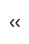
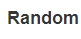
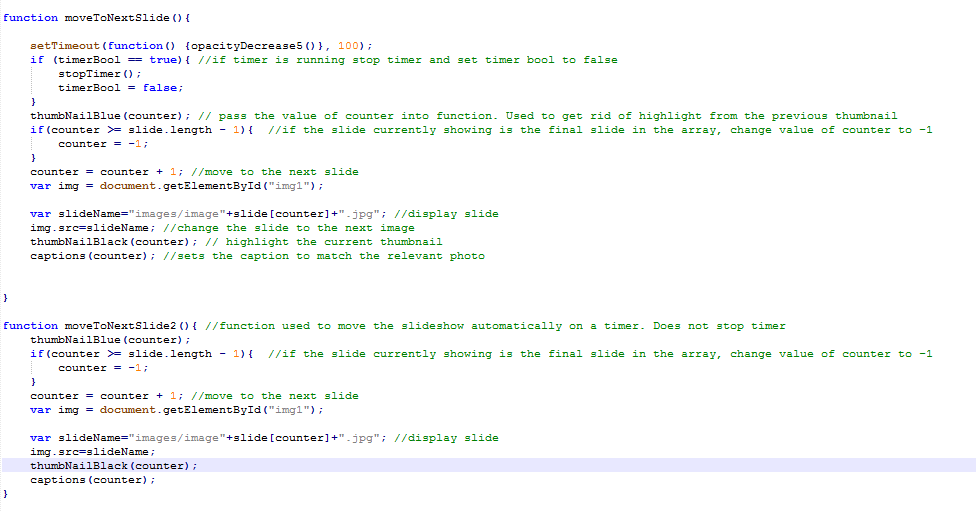
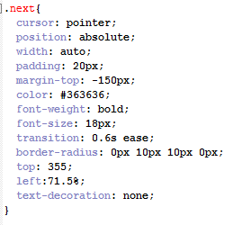

Website Design Report
Design
When creating the website I wanted to make a simple user interface which contained minimal text, to allow users to navigate through the webpages using album artwork. The main colours used were a light black (#363636) for the menu, headers and footer. A light grey for the background (#0099ff) and white for content. I believed this colour design would not distract the user and will allow for easy reading for everyone.
Each webpage contained a horizontal menu using css. I chose to float the menu from the left because the webpage content is written in the English language and is intended to be read from left to right. By setting the content of the menu to float from the left, the user will first read the logo and then the first menu option (Home Page). As the user reads from left to right they will see a button to navigate to each individual webpage. Based on the amount of content within each webpage, I felt it was not necessary to implement a drop down list to specific menu elements. CSS allowed me to make the menu as user friendly as possible, using styling to implement colour changes when the cursor hovers over a menu element. This helped indicate to the user that they their cursor is hovering over a specific menu option.
Images
To give the website a more authentic feel, I used photoshop to create the logo. The process involved adding individual elements to make the website logo look like a vinyl player.
The images used to categorise the featured albums into Hip-Hop and RnB were originally taken off Google. These images were then imported into Photoshop where I used the saturation tool to get rid of the photos original colour and add a white caption in bold to specify the category for each image. When the user enters the webpage the two category photos will be one of the first few things they notice, so it was important to make them stand out using bold letters. A hover style was added to each image within the content of the homepage to display to users when they are hovering over an image that, clicking on it will result in an action.
Search Optimisation
The incorporation of heading tags and alt tags were introduced to the website to improve search optimisation. By including specific h1 tags means that the website will appear higher up in relevant search engine results. It is important to make sure the website appears as high as possible in search engine results to generate the most hits.
Functionality
Home Page
In order for the website to be easy to use and navigate, a lot of functionality was implemented. Within the homepage I had difficulty making the featured albums hidden using CSS so I decided to use Javascript to create and delete the images when a category image is selected. The implementation involved adding an ‘onclick’ feature within both of the image tags which ran the Javascript functions “rnbMenu()” and “hiphopMenu()”. These functions ran further functions which generated the featured album covers and set their attributes.
I wanted the images generated to link to the XML page and display the relevant album information. I found it very difficult to implement this feature without using PHP, as it required information to be shared across different files. In order to overcome the problem I decided to use anchors. Each album linked to “xml.html” but contained a different anchor title. The xml.html file would run javascript on the body load to check the current URL; if the url displayed an anchor, the appropriate album details would be displayed using if statements. For example when “Frank Ocean – Blonde has been selected, it will link to the url “xml.html#Blonde”, on the body load an if statement will run to check if the url contains the keyword “Blonde” and thus loading the Blonde album information.
XML Page
I wanted all of the albums within the XML page to be clearly visible. To do so I created a table which placed XML elements into the appropriate columns.
I used Javascript to allow more details to show up when the user selected the item. CSS allowed for the specific table to be highlighted when the user selected it, using the :after property. A web server is used to link the separate XML page to the website so that the data can be read. I implemented a basket feature using local storage (see Problems for further information). This feature stored album information to local storage, which is retrieved on the Order Form page on load and passes XML into the order form page.
XPath
Within the XML document I put a keyword 'sale' for all albums on sale within the title tag. Using xpath I was able to generate a filtered result of all the elements which were on sale. I found this very difficult as xpath requires different code dependent on the browser. Using if statements I was able to overcome this.
Order Form
The Order form retrieves data from local storage and then obtains the correct product from the cd.xml page.
The creation of the order form page involved a lot of Javascript to generate appropriate input boxes, validation checks and inform the user appropriatelty. When first visiting the page, the user is greeted with their basket information and a number of input boxes for personal information. As there are a variety of payment methods which require different types of data in order to process, I decided the payment input types to be generated using javascript dependent on the radio box selected for payment information. Each radio button runs a different JS Function; each runs a different subsequent function which has a similar purpose.
On clicking the submit function validation checks are run. The validation checks go through each essential input and checks the following:
- Checks to see if anything has been input into text box.
- Checks to see the correct data type has been entered.
- Checks to see the correct number of characters has been entered (only applies for card details).
The validation check works by returning a false or true Boolean to a variable assigned to the specific function. If the function returns a false value, it means that the specific validation check has failed. If a true value has returned, a validation check has passed. In order for the form to be submitted and thus presenting the submitted form message, all validation checks need to pass.
The payment option “Voucher” only generates one input box which is for the voucher code. If the user enters “XMAS2017”, the price will be reduced to £0.00.
My submission form required a feature which would be able to prevent a bot from being used. In order to overcome this I created a captcha. This captcha is generated every time a radio button has been selected for payment, a random maths question is generated. Javascript was used to generate numbers and operators at random, to create a unique answer for each input. The two numbers selected could be anything from 1 to 20 and the operator selected could be multiplication, addition, subtraction or division. During testing I discovered that the questions being generated were too difficult, so I decided to change it so the second number generated could not be higher than the first, making subtraction easier. The answers to division were too difficult, as they were generating decimal numbers, so the division operator was removed to simplify the captcha. The validation check for captcha only passes if the input is correct.
When it comes to paying for an item, it is essential that the user knows what they are paying for and how much. A basket feature on the XML page stored album information for the selected item in local storage. When the order form page is generated, the album information from local storage is obtained and displayed to show the user what album they are paying for. When the correct personal and payment information has been submitted the “Price to pay” label will change from the current price of the album to “£0.00”.
Slideshow
The slide show displays featured albums as recommendations. There are 5 different albums which the user can navigate in different ways using the buttons.

This button generates the next image in the slide show.
Generates the previous image in the slide show.
Displays the last image within the slide show.

Generates the first image from the slide show.

Randomly generates an image from the slide show.
When selected, the slideshow automatically changes to the next image every 3 seconds and changes the play button icon to a pause button icon. If any button is pressed while the play button is running, the play button function will stop. In order to keep the slide show code simple, I named each image according to its slide number. The first image has the name “image1.jpg”, second image “image2.jpg” and so forth. Within slideshow.js there is an array called “slide” which contains the number 1 through to 5. This is used to define which image will be displayed. A counter variable is used to notify the array which slide number to select. For example if the first image is currently on display and the user selects the next slide button, the counter will increment and indicate that the number 2 needs to be selected from the array. This number is used to generate a path name for the specific image:

The variable is then appended into the appropriate place, which in-turn displays the appropriate image.
This type of functionality is replicated throughout each button within the slideshow. For the previous slide button, the counter simply decrements and for the random number button a random number between 1 to 5 is selected to be the value of the counter.
During testing, the play button feature caused a lot of problems as it was running continuously in the background. The play button would overrun other buttons used, for example if the next slide button is pressed at 2.5 seconds after the last slide has been generated, the next slide will be on display for less than half a second before the play button function displayed the next image. This meant that users would not get a good chance to see the slide show images in the method selected. To overcome this I created a stopTimer function which stops the timer whenever any other button has been pressed. The user will then have the option to restart the play loop by selecting the play button. This was a good idea in theory but did not run effectively at first, as the playButton function ran a function used to move to the next slide which contained the function to stop the timer. Every time the playButtonFunction generated a new image, the timer stopped and the play button had to be selected again. I overcame this by replicating the moveToNextSlide function and getting rid of the code used to stop the timer.
Transitions
Javascript was implemented to increase the opacity of an image until it dissapeared. Then another function runs to generate the next image and decrease the opacity, giving off a transition effect
Captions
In order to show users information about each image within the slide show, captions were used. These captions were stored as strings within an array named captionText. The order of the strings within the array matches those of the array slide, meaning the same counter variable can be used for both arrays to display the appropriate caption for each image.
ThumbnailsThe thumbnails were created by making very small versions of each image. The decision for this was to allow the user to see a preview for each image before the image is generated in the slideshow. It is also a feature to improve navigation; the user can select a thumbnail to go to the specific image. To make the slide show easier to understand, the current image being displayed is also highlighted using a black border. The effect was created by using two functions named thumbNailBlack and thumbNailBlue. The function thumbNailBlack passed the value of the counter, increasing the value by one to match the value of the thumbnail and putting a black border around the appropriate thumbnail. The thumbNailBlue function removes the border from the previous thumbnail so that it no longer has a border.
Slideshow CSSCSS played a huge factor in the way the slideshow looks. Each button was generated using tags containing a unique class name. The unique class names were used to implement different style properties. Each button contained the following properties:
Each property was different to fit appropriately within the slide show:
- Cursor: used to change the pointer and communicate to the user that clicking the button will cause an outcome.
- Position: set as "absolute" so that the element is not static and can be moved.
- Width: set as "auto" to adjust to the size of the text.
- Padding: provides space between the text and the end of the element.
- Transition: gives a transition effect on hover.
- Border Radius: gives the button rounded corners.
- Top: used to set how far from the top the button is placed, e.g. 355 pixels from the top.
- Left: a percentage was used to adjust dependent on screen size
The CSS contained Media Rules with different values of the above properties to adjust the size and placement of buttons dependent of the screen size used.
Accessibility
It is imperative that everyone can read and navigate through the website, regardless of disability or the device they are using. In order to make the website as accessible as possible, Media Rules were used to adjust the styling properties, dependent on screen size. Media rules were made for the following screen sizes:
- Width of over 1000 pixels (large monitors)
- Width between 753 pixels and 1000 pixels (small monitors)
- Width between 481 pixels and 752 pixels (tablets)
- A width of 480 pixels or less (mobile phones)
I chose to use Media Rules over Bootstrap as Media Rules allows for more control over appearance compared to the set accessibility defined by Bootstrap. Although Bootstrap is very effective and produces a clean look if done correctly, it can cause for a large number of errors if not implemented correctly. The media rules are mainly used to adjust the buttons within the slideshow, so that they fit the screen appropriately. The main approach to maintaining accessibility was by using percentages for values of properties, allowing for elements to adjust accordingly to screen size. The styling property is set to a width of 60% to give the appropriate scale of space between the website content and the size of the browser window at all times.
Mobile app
To improve accessibility for mobile phones I created an application using Adobe Phone Gap. This was a reasonably simple way to create a mobile app, by slightly adjusting file names and inserting JQuery files for mobile, I was able to create a functional mobile app. When first running the mobile app I noticed that the menu did not work very well, as it was created for devices with a large screen width. In order to overcome this I used w3Schools to understand how to implement a mobile menu, which only displayed the home button and a mobile menu icon when the screen size was below 480 pixels. This helped keep the design of the navigation menu the same regardless of the screen size, without the menu buttons being displayed vertically.
Colours
The choices of colours throughout the design of the website were simplistic. I wanted the website to be easy to read and accessible. I also did not want the colours of the website to become distracting and draw the focus away from the album artwork. To make sure the contrast of colours within the website were easily accessible, I used the webaim.org website. This website asks for the colour scheme used within the website and lets the user know whether this colour scheme is accessible. The colours I used passed the check, meaning they were accessible.
Fonts
The font family used throughout the website was “Source Sans Pro” as I felt it was an easy to read and a well-designed font.
Alt Tags
In order to make the website accessible to people using text readers, it was important my images contained alt-tags which provides a description for each image. The alt tag is read out loud by the screen reader and allows for people with sight impairment to understand what each image says.
Print Style
Using Media Rules I was able to encorporate a print style so that unnecessary features would not show up if the user wants to print a page. The menu and slideshow buttons are removed on print and to ensure the style was similar to a document the margins were adjusted
Problems
Throughout the creation of the website, there were some major problems which arose and were difficult to solve. Some of the problems were solved and some were not solved although an alternative method was used.
Slideshow Problems
Creating the slideshow generated the most problems. The first major problem was adding a highlight feature to display which image was currently being shown. It was intended that the highlighted thumbnail would be a specific colour which was partly transparent. Although in practice the colour was not being produced; in the end I decided to use a black border which also increased the size of the image element and enhance the effect. After fixing this problem, another problem was generated, I could not get rid of the border for previously highlighted thumbnails. To overcome this I created a new function named (thumbNailBlue) which removed the border style for the previous thumbnail.
The slideshow was working but as soon as the size of the browser window changed, the page became very hard to navigate due to the lack of styling accessibility. The buttons remained in the same place when the window size changed, resulting in the slideshow becoming unreadable. In order to overcome this issue I implemented media rules for different screen sizes, although this did not work at first as my media rules were at the top of my style sheet. Through research I found out that the media rules had to be underneath the related properties to be able to apply the rules, which solved the problem.
Home Page Problems
When planning the home page, I had set out with the idea to put albums for the matching category to have hidden visibility which would become visible when the category photo is selected. After implementing the feature, the whole design of the home page became misshaped. I decided to use Javascript to generate and delete the photos when the category image is pressed. This meant that the design of the website was more fluid and was not misshaped.
XML Page
In order for users to be able to purchase a desired album, they have to select an album. At first I found it very difficult to share information across two different html and javascript files. I decided to overcome this by storing basket information to local storage when the ‘Basket’ button is selected. This solved the problem but still caused functionality errors as only one album could be added to basket at a time. Another problem is that if a new user logs onto a browser which previously accessed the website, they may see the previous users basket as the information is stored to local storage.
XPath
The website includes xpath to filter categories. Originally I had planned for a new table to be generated which would only show the titles of albums on sale. I struggled to implement this feature and decided to generate the filtered XML elements so that they were red.
References
- 1.W3Schools Slideshow
- 2.W3Schools Span
- 3.W3Schools Navbar
- 4.Remove Underline
- 5.No Wrap
- 6.Mobile Navigation
- 7.Search Arrays
- 8.Play Button
- 9.Local Storage (Basket)
- 10.XML
- 11.Table
- 12.Image problem
- 13.Highlight table on click
- 14.Anchors for Homepage to xml link
- 15.Check URL for XML
- 16.Cursor Types
- 17.:after selector
- 18.XML CD Catalog
- 19.Change Image Opacity
- 20.XPath